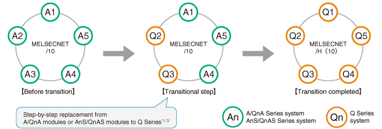

Programmable Controllers MELSEC-A Series Renewal

Utilize the existing network cables to build MELSECNET/H network system
MELSECNET/H Network module (optical loop type, coaxial bus type)
Supported series: 

Utilize the existing network cables to build the MELSECNET/H(10) network system
Gradual transition from the existing AnS/QnAS modules or A/QnA modules in the MELSECNET/10 network system to the Q Series with the MELSECNET/H(10) network system is possible.*1
For both the PLC-to-PLC network and the remote I/O network, the transition can be completed by the step-by-step replacement from the AnS/QnAS Series modules or the A/QnA Series modules to the Q Series modules.*1

PLC to PLC network, remote I/O network
| A/QnA Series model | AnS/QnAS Series model | Q Series equivalent model |
|---|---|---|
| AJ71LP21 AJ71QLP21 |
A1SJ71LP21 A1SJ71QLP21 |
QJ71LP21-25*2 |
| AJ71LP21G AJ71QLP21G |
- | QJ71LP21G*2 |
| AJ71QLP21S | - | QJ71LP21S-25*2 |
| - | A1SJ71QLP21S | QJ71LP21S*2 |
| AJ71BR11 AJ71QBR11 AJ71LR21*1 AJ71QLR21*1 |
A1SJ71BR11 A1SJ71QBR11 A1SJ71LR21*1 A1SJ71QLR21*1 |
QJ71BR11*2 |
Remote I/O network
| A/QnA Series model | AnS/QnAS Series model | Q Series equivalent model |
|---|---|---|
| AJ72LP25 AJ72QLP25 |
A1SJ72QLP25 | QJ72LP25-25*3 |
| AJ72LP25G AJ72QLP25G |
- | QJ72LP25G*3 |
| AJ72BR15 AJ72QBR15 AJ72LR25*1 AJ72QLR25*1 |
A1SJ72QBR15 A1SJ72QLR25*1 |
QJ72BR15*3 |
- *1.The Q Series modules do not support the MELSECNET/10 coaxial loop system; therefore, step-by-step replacement is not possible. The coaxial loop system should be replaced with the coaxial bus system, optical loop system or twisted bus system at once.
- *2.The Q Series remote master station is not compatible with the A/QnA Series remote I/O stations, and therefore the master station should be replaced with the Q Series remote master station after replacing the entire A/QnA Series remote I/O stations with the Q Series stations.
- *3.When mixing the A/QnA Series and Q Series modules on the same network, please use this product whose first 5-digit serial number is 15012 or later.